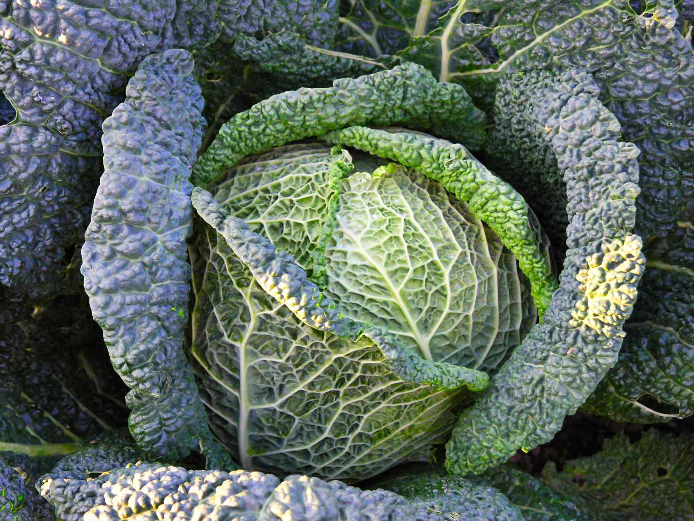

| Name | Image | Description |
|---|---|---|
| Bok Choy | Commonly referred to as Chinese Cabbage, comes with thick green or
white stalks and is commonly used in stir fry. It is mostly grown in Asia, but can be found in North America as well. |
|
| Brussel Sprouts | This variety of cabbage doesn't produce one large head, rather
several small edible sprouts. It is named after Brussels, Belgium, and first appeared in the 5th century. |
|
| Dutch Cabbage |  |
Also known as White Cabbage, Dutch Cabbage is one of the most
profitable varieties of cabbage due to its large size, yield, and resistance to elements and pests. There are however very difficult to care for as well, which is why they aren't very popular. |
| Gonzales Cabbage | Gonzales Cabbage is one of the fastes and hardiest varieties of
cabbage. It only takes 2 months to grow, and can be grown in every season except summer. It is notably smaller than other varieties, and has a unique spicy taste. |
|
| Green Cabbage | By far one of the most well known varieties of cabbage, Green
Cabbage can be found almost everywhere. These cabbagestend to be both smooth and dense, and are the most common variety of cabbage in the world |
|
| January King | This cabbage has been harvested for less than 2 centuries, and is
one of the heaviest versions of cabbage. It is characterized by its blue green leaves and occasional red/purple hue. |
Kale | Kale is a unique variety of cabbage in that it's leaves do not form a
head. Kale is one of the closest varieties of cabbage to that of wild cabbage |
| Red Cabbage | Red cabbage, sometimes called Blaukraut, is a variety of cabbage
commonly found with red/purple leaves. The color of the cabbage is determined by the pH of the soil it was grown in, becoming more red with lower values, and greenish-yellow in high values. It is commonly used in salds and coleslaw, but can also be used as a pH indicator. |
|
| Ruby Perfection | Named after its dark red color, Ruby Perfection Cabbage is a fast
growing cabbage that is usually planted in the winter. It is well known for its appearance and flavor. |
|
| Savoy Cabbage |  | Well known for its crinkly exterior, Savoy cabbage is a part of the
Brassicaceae family, and believed to have originated in the Mediterranian region |